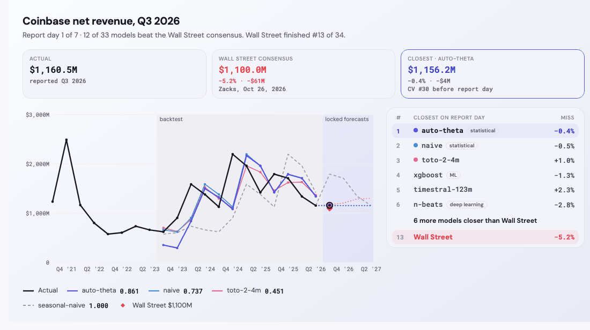
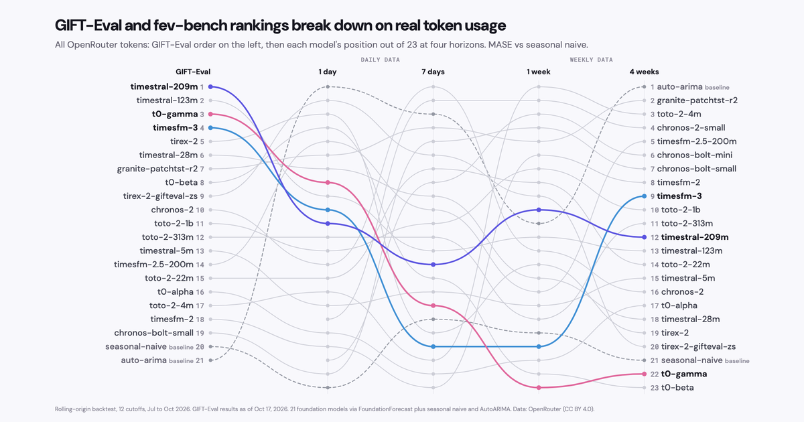

Can we beat Wall Street using ✨FoundationForecast?
Q3 2026 earnings from 10 public companies with 24 time series foundation models, scored against the Wall Street consensus on report day. Not investment advice.
Testing time series foundation models on real-world data.

Q3 2026 earnings from 10 public companies with 24 time series foundation models, scored against the Wall Street consensus on report day. Not investment advice.

OpenRouter's top 50 with 21 time series foundation models, testing whether benchmark rankings hold on real-world token usage.